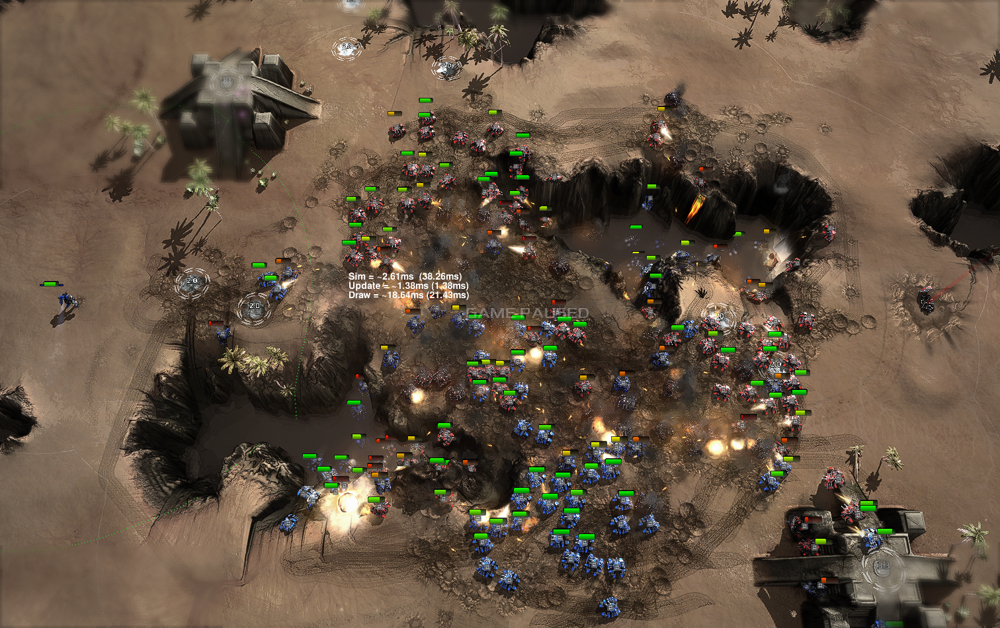

SensorLOS 단일 원인 개선 · 구현·검증·6회 비교 완료 · 모든 실행 종료
같은 선을 그리면서
평균 FPS 12.17% 개선
이번 Ultra·AA OFF 전투 조건에서는 후보 채택을 권장합니다. 기존 선 판정과 화면 의미를 보존하는 범위에서 처리 영역을 줄였고, 별도 픽셀 검증과 실제 게임 검증을 통과했습니다.
변경 전 · 3회 평균47.46 FPS
변경 후 · 3회 평균53.24 FPS
평균 변화+12.17%
후보를 한 번 빌드하고, 별도 실제 게임 검증 1회 후 성능 측정 6회를 실행했습니다. 성능 측정은 회당 전투 예열10초와 측정40초이며, 순서는 A → B → B → A → A → B입니다. A는 기존 네이티브, B는 SensorLOS만 수정한 후보입니다.
 막대는 각3회 평균, 점은 개별 측정입니다. 이전 결과·검증 실행·프로파일 결과는 섞지 않았습니다.
막대는 각3회 평균, 점은 개별 측정입니다. 이전 결과·검증 실행·프로파일 결과는 섞지 않았습니다.
회차별 결과
평균 FPS를 주판단으로 삼았습니다. 세 후보 실행의 최저 평균53.212FPS가 세 기준 실행의 최고 평균47.502FPS보다 높았습니다. 1% low는 보조 기록이며, 기준 A3의 낮은37.549FPS도 제외하지 않았습니다. 주 평균은 회차별 FPS의 산술평균입니다. 전체 draws/전체 초로 합산한 값도 각각47.462315와53.237231FPS로 거의 같습니다.
고정 장면 비교
같은 카메라와 정지 전투 시점의 원본 PNG입니다. 아래 슬라이더로 비교할 수 있고, 회차를 선택해 각3장을 확인할 수 있습니다.
후보기존


기존 원본 PNG 열기후보 원본 PNG 열기6장 전체 비교
실제 게임의 전체 이미지가 바이트 단위로 같다는 뜻은 아닙니다. 파티클·구름·프레임 보간·통계 문구 등은 실행마다 달라지며, 기준끼리도 차이가 있습니다. 6장 모두 배치·지형·선에 눈에 띄는 누락이 없는지 확인했습니다. 정확한 색상·깊이·스텐실 동등성은 아래 통제 GPU 검증으로 별도 확인했습니다.
무엇을 바꿨는가
기존에는 선분을 둘러싼 축 정렬 사각형을 그리고 그 안의 픽셀마다 정확한 선 판정을 수행했습니다. 후보는 대각선 주변의 빈 면적을 줄이도록 같은 양자화 좌표에 맞춘 기울어진 사각형을 사용합니다. 최종 선 판정이 받아들이는 픽셀과 이웃 계산용 픽셀을 모두 포함하도록 여유를 두었습니다.
한 샘플(AA OFF), 안전한 좌표·폭·길이, 실제 면적 감소 조건을 모두 만족할 때만 적용합니다. 그 외 조건과 MSAA는 원래 사각형으로 돌아갑니다. 실제 sample 수를 기존 uniform의 사용하지 않던 필드로 전달하는 호출부 변경까지 두 파일에 묶었습니다.
기존 exact coverage·선 폭·끝점·near-plane clipping·flat 값·마스크 샘플링과 미분·alpha/discard 순서·깊이·스텐실·블렌딩·GPU 자원 수명은 보존했습니다. Fragment/fan/MSAA 코드 구간은 원본과 바이트 단위로 같습니다. 화면 품질을 줄이거나 선을 생략하는 변경은 없습니다.
동등성과 실행 검증
| 검증 | 실제 결과 | 확인 범위 |
|---|
| 코드·포함성 검토 | 두 파일 검토 통과. 기존 FS와 같은1/256 좌표 양자화·major-axis tie 규칙, 양끝4px·반폭+4px 여유, 안전 fallback. | 기존 accepted 픽셀과2×2 helper 영역 포함 근거. 씨앗·화면 의미·수명 변경 없음. |
| 독립 CPU oracle | 8,006사례. accepted 픽셀170,522개, helper 중심1,534,698개 포함 검사 통과. | 정확한 정수 diamond-exit/wide-line 판정과 float32 기하 비교. 음수·방향·폭 경계·클리핑·퇴화 사례. |
| 실제 Metal 픽셀 비교 | 3,600사례에서 BGRA8 색상·Depth32Float·Stencil8 전체 바이트 동일. 새 경계가 사용된2,234사례, 실제 색·스텐실 변화1,869사례, 깊이 기록427, 실제 클리핑29, seam12, x/y-major 실제 출력1,199/629. | 실제 변경 없는 OriginalSensorLOSFragment와 테스트용 VS 사용. 마스크·미분·alpha·깊이·스텐실·공유 경계 검증. 빈 화면끼리 비교한 결과만으로 통과하지 않도록 검사. |
| 실제 게임 검증 | Metal API Validation Enabled 실제 로그, 감지된 Metal 오류0, 정상 종료, 1512×950/sample1 내부 화면 확인. | 실제 엔진 경로의 별도 검증1회. 검증 FPS는 성능 데이터에서 제외. |
| 6회 측정의 동일성 | 동일 실제 child flags, 카메라·초기 상태·seeds·공식 명령·생성600/파괴433. 40개의 매초 simulation-frame/unit-count 기록이6회 모두 일치. | 실제 World MRT/final-color/완료·retire 기록과 전투 PNG 확인. 유휴 제한OFF만으로 렌더링을 가정하지 않음. |
통제 GPU 검증은 테스트용 VS와 실제 FS를 사용한 sample1 범위의 검증입니다. 전체 엔진의 모든 장면·MSAA 동작에 대한 완전한 픽셀 증명으로 확대하지 않습니다. 실제 게임 화면 검토와 API 검증은 별도 근거입니다.
확인한 개선과 남은 한계
이번 고정 전투의 실측 평균 FPS 개선은 확인됐습니다. 새 경계를 택할 때 기하 면적이 더 작다는 조건과 실제 GPU에서 해당 경로가 동작한다는 점도 확인했습니다. 그러나 실제 전투에서 Fragment 호출 수나 GPU 시간이 정확히 몇 % 감소했는지는 추가 계측하지 않았습니다.
따라서 합성 사례의 면적 비율이나 이전 재생 프로파일의31.6% 비용을 실전 작업 감소율·예상 FPS 이득으로 사용하지 않습니다. 이번12.17%는 한 Mac, 한 Ultra·AA OFF 전투 fixture에서 각3회 측정한 결과입니다. 다른 맵·설정의 개선율을 보장하지 않습니다.
이전에 했던 최적화와의 관계
SensorLOS의 비싼 판정을 마스크 검사 뒤로 미루는 별도 최적화는 과거 실제 시험 기록이 있습니다. 당시 다른 조건의6회 비교는161.1306→161.3425FPS, 약+0.1315%였습니다. 현재 기준 소스에는 그 순서 변경이 없지만, 보류·채택 누락·회귀 중 무엇인지 확인되지 않았으므로 실수라고 단정하지 않습니다.
SourceLines133은 공통 선을 위한 다른 셰이더 경로입니다. 현재 SensorLOS의 축 정렬 경계가 이미 존재한다는 사실과, 이번에 그 사각형을 선 방향에 맞춰 좁힌 작업을 구별했습니다. 과거 shortcircuit이나64-bit 수학·정밀도·Metal Line 대체·인코더 분할·pool/PREPARE/queue 변경은 이번 후보에 추가하지 않았습니다. 이력과 보류 후보 근거
채택 범위와 산출물
검증한 AA OFF 조건의 SensorLOS 후보로 채택 권장. 원본 소스·앱·이전 증거를 보존한 별도 후보이며, Git·릴리스·배포는 수행하지 않았습니다. 데칼·풀 경계 변경은 이 후보에 포함하지 않았습니다. 한 번의 후보 엔진 빌드, 독립 GPU 검증, 실제 게임 검증1회, clean6회로 이번 범위를 닫았습니다. 모든 소유 게임·검증 프로세스와 awake 요청은 종료했습니다.
재현 조건과 정확한 실행 파일 신원
{
"baselineSource": "a3c7c6bfa93d09dac25755534195932d12fff41a",
"baselineSignedSHA256": "b25a08287679847a420c37eaf3c201c9c95ad696e90d1b1eaa18e0cb08060942",
"candidateSignedSHA256": "87df3a1bc49a5fca4c47d05de1a41a5d85f464941365b8d20f7ee2eca1e4108f",
"candidateBinary": "${AUDIT_WORKSPACE}/evidence/sensorlos-region-fix-20261116-01/runtime/native/bin/spring-metal4-scene",
"conditions": "Ultra index4 / AA OFF (actual native samples1), Seths Ravine Remake1.3.1, local26,1512x950 game/1512x982drawable, spectatorfullview, pinned camera and seeds, Prepare1 Begin0 pool0 DQU0, idle/offscreenFPSreductionOFF/VSyncOFF.",
"sourceChanges": [
"source/engine/rts/Rendering/Metal4/NativeSensorLOSShaders.h",
"source/engine/rts/Rendering/Metal4/Metal4SensorLOSNative.mm"
],
"build": "RelWithDebInfo/Ninja, initial cache identical, full target build1,1538objects/35archives/0mismatch, final no-work",
"meanFormula": "mean(per-run draws / counted elapsed seconds),3runs each",
"runtimeFragmentCount": "Not measured"
}